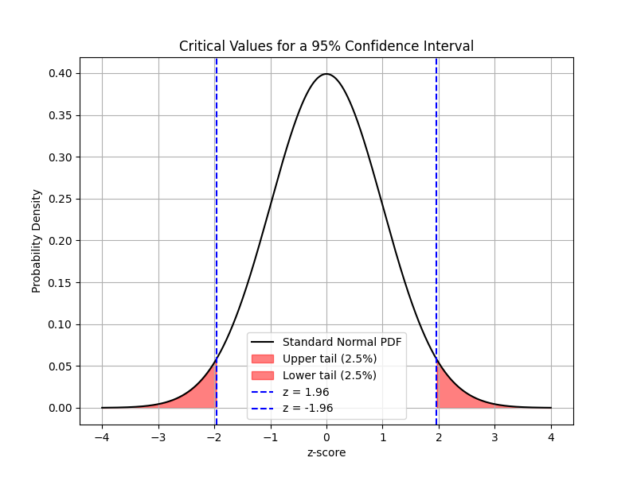

Once we have a statistical model (or hypothesis), we need to assess whether it's plausible given our data \(\mathcal{D}\). In this section, we introduce frequentist statistical inference and hypothesis testing. Although Bayesian inference can replace many frequentist techniques and is especially popular in modern machine learning, frequentist methods remain valuable tools — they're often simpler to compute, more standardized, and provide complementary insights.
Here, we discuss the null hypothesis significance test(NHST).
Suppose we have two competing hypotheses:(So, hypothesis testing is a kind of binary classification problem.)
- Null Hypothesis \(H_0\): This is the default assumption.
- Alternative Hypothesis \(H_1\): This represents the claim we wish to support.
Our goal is to decide which hypothesis is more plausible. Usually, our reasoning is that if \(H_0\) is very unlikely, then we conclude that \(H_1\) would be true (i.e., we reject the null hypothesis).
Rejecting \(H_0\) does NOT mean \(H_1\) is absolutely true. Conversely, failing to reject \(H_0\) only means that the evidence is insufficient to support \(H_1\). Thus, our conclusion can be wrong:The type I error rate \(\alpha\) is called significance of the test. It represents the probability of mistakenly rejecting \(H_0\) when it is true (typically, set 0.05 to 0.01 in practice.)
- Type I error(or false negative) : Accidentally rejecting the null \(H_0\) when it is true.
- Type II error(or false positive): Accidentally accepting \(H_0\) when the alternative \(H_1\) is true.
To decide whether to reject \(H_0\), we define a function of the data \(\mathcal{D}\) that summarizes the evidence against \(H_0\). This is called the test statistic, denoted as \(test(\mathcal{D})\). To evaluate the significance of our observed test statistic, we compare it to what we would expect under the null hypothesis. That is, we sample the hypothetical dataset \(\tilde{\mathcal{D}}\) assuming \(H_0\) is true and compute their test statistics, \(test(\tilde{\mathcal{D}})\).
The p-value is defined as the probability, under \(H_0\), of obtaining a test statistic at least as extreme as the one we observed: \[ p = P(test(\tilde{\mathcal{D}}) \geq test(\mathcal{D}) | \tilde{\mathcal{D}} \sim H_0). \] A "small" p-value (typically, \(< \alpha\)) indicates that the observed result is unlikely under \(H_0\), leading us to reject the null hypothesis in favor of \(H_1\). Traditionally we reject the null hypothesis if the p-value is less than \(\alpha = 0.05\), which is called the significance level of the test. Note that a p-value of 0.05 does NOT mean that the alternative hypothesis \(H_1\) is true with probability 0.95. Indeed, even many scientists misinterpret p-values.
NHST provides a systematic way to evaluate claims, but it has limitations:
- Statistical significance does not imply practical significance. Even if \(H_0\) is rejected, the actual effect size may be too small to be meaningful.
- p-values depend on sample size. With very large datasets, even tiny, practically irrelevant differences may yield small p-values.
- Frequentist methods rely on fixed significance thresholds. Bayesian approaches offer an alternative framework by directly computing the probability of hypotheses given the data.
Example: Suppose we are analyzing the test scores of students in a school. Historically, the average test score is 70. A researcher believes that a new teaching method has improved scores. To test this, we collect a sample of 30 students' scores after using the new method.We collected a sample of (\(n = 30\)) students with the following observed statistics:
- \(H_0\): The new method has no effect, meaning the true mean is still 70.
- \(H_1\): The new method increases the average score, meaning the mean is greater than 70.
where \[ s = \sqrt{\frac{1}{n-1}\sum_{i=1}^n (x_i - \bar{x})^2}. \] Since the population standard deviation \(\sigma\) is unknown, we use one-sample t-test. The test statistic is computed by: \[ t = \frac{\bar{x} - \mu_0}{s / \sqrt{n}} = \frac{75.12 - 70}{9.00 / \sqrt{30}} \approx 3.12. \] The p-value is the probability of observing a test statistic as extreme as (or more extreme than) the calculated t-value under the null hypothesis. This follows a Student's t-distribution with \(n -1 = 29 \) degrees of freedom.
- Sample mean: \(\bar{x} = 75.20\).
- Sample standard deviation \(s = 9.00\)
Then we have \(p \approx 0.0021\) via some numerical computation. Set the significance level \(\alpha = 0.05\). Since \(p < 0.05\), we reject \(H_0\). Therefore, there is strong statistical evidence that the new teaching method increases students' test scores.
We can only say that the data we observed(test scores) are very unlikely under the assumption that the true mean is still 70.
It does NOT mean that..
- the new teaching method definitely increases test scores.
- the probability that \(H_0\) is true is 0.0021.
- the effect is practically significant.
Confidence Intervals vs Credible Intervals
In frequentist statistics, we use the variability induced by the sampling distribution as a way to estimate uncertainty of a parameter estimate. we define \(100(1 - \alpha)%\) confidence interval(CI). It is common to set the significance level \(\alpha = 0.05\), which yields a 95% CI. If we repeatedly sampled data, and construct a 95% CI for each data, then about 95% of such intervals will contain the true parameter \(\theta\).
95% CI does NOT mean that the true parameter lies in the interval with probability 0.95 because, in frequentist statistics, \(\theta\) is treated as a fixed constant.
On the other hand, in Bayesian statistics, we treat the data as fixed (since it is known) and the parameter as random (since it is unknown). Indeed, the explanation; "the true parameter lies in the interval with probability 0.95." is valid in Bayesian statistics. Such a interval is called the credible interval.Example: Suppose we toss a coin \(n = 100\) times and observe 60 heads. Now we want to estiamte the probability of getting heads.You find the Bayesian credible interval "more intuitive" because it directly answers the question, “What is the probability that the parameter falls within this interval given the data and our prior beliefs?” On the other hand, Frequentist methods provide guarantees on long-run performance without the need for a prior, which can be an advantage in settings where subjective beliefs are hard to justify.
First, we try the frequentist approach. The point estimate for the probability of heads is \(\hat{p} = \frac{60}{100} = 0.6\), and the standard error(SE) for a proportion is given by: \[ \text{SE} = \sqrt{\frac{\hat{p}(1-\hat{p})}{n}} = \sqrt{\frac{0.6 \times 0.4}{100}} \approx 0.049. \] For a 95% CI using normal approximation, the critical value is \(z_{0.025} \approx 1.96\). Then CI is given by \[ \text{CI} = [\hat{p}-z_{0.025} \times \text{SE}, \, \hat{p}+z_{0.025}\times \text{SE}] \approx [0.504, 0.696]. \] If we repeated the experiment (tossing the coin 100 times) many times and computed a 95% CI each time, about 95% of those intervals would contain the true \(p\).Note: A z-score is any value that has been standardized to represent the number of standard deviations away from the mean. The critical value is a specific z-score used as a threshold in hypothesis testing or confidence interval calculations. In our case, \(z_{0.025} \approx 1.96\) is the critical value that separates the central 95% of the distribution from the outer 5% (2.5% in each tail).
In Bayesian approach, we assume a uniform prior for the probability \(p\) which is equivalent to a Beta distribution: \[ p \sim \text{Beta}(1, 1). \] With 60 heads and 40 tails, the likelihood is given by a binomial distribution. In the Bayesian framework, the posterior distribution is: \[ p \sim \text{Beta}(1+60, 1+40) = \text{Beta}(61, 41). \] (Note:The Beta distribution is a conjugate prior for the binomial likelihood. This means that when the likelihood is binomial, which is the case for coin tosses, using a Beta prior results in a posterior distribution that is also a Beta distribution.)
A 95% credible interval (CrI) is typically obtained by finding the 2.5th and 97.5th percentiles of the posterior distribution. These percentiles can be computed using the inverse cumulative distribution function (CDF) for the Beta distribution. For example, \[ \text{Crl} = [\text{invBeta}(0.025, 61, 41), \, \text{invBeta}(0.975, 61, 41)] \approx [0.52, 0.68]. \] Given the observed data and the chosen prior, there is a 95% probability that \(p\) falls between 0.52 and 0.68. This interval directly reflects our uncertainty about \(p\) after seeing the data.
Back to Home
Back to Probability